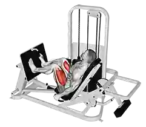

Esecuzione Leg press

Cosa è la leg press?
La leg press o pressa per le gambe è una macchina isotonica concepita per l'allenamento degli arti inferiori; più precisamente, per eseguire delle spinte o distensioni.
Si tratta di un esercizio multiarticolare – in quanto coinvolge sia l'articolazione di anca e femore (coxo-femorale) che quella del ginocchio (femoro-tibiale + patello-femorale) – finalizzato al potenziamento di cosce e glutei.
Attrezzo tra i più noti e diffusi, la leg press può inoltre presentarsi orizzontale o inclinata a 45° (leggermente diverse sul funzionamento e sull'impatto allenante).
La pressa per le gambe costituisce un esercizio (prevalentemente) complementare per i sollevatori di pesi e in tutti gli sport che richiedono una preparazione generale di forza degli arti inferiori.
Nel bodybuilding nel fitness invece, soprattutto chi non ha la possibilità per ragioni anatomo-funzionali di eseguire squat e stacco da terra, la leg press viene considerata alla stregua di un esercizio "fondamentale".
Come eseguirla in modo corretto?
Di seguito gli step fondamentali:
- Dopo aver regolato la resistenza, siediti in posizione comoda, con tutta la schiena in appoggio – attenzione soprattutto al tratto lombare.
- Posiziona quindi i piedi sulla pedana; ricorda che, per quanto si tratti di una macchina "guidata", è indispensabile non "snaturare" troppo la "normale" posizione di spinta. Tra l'orizzontale e l'inclinata si osservano alcune differenze nell'appoggio plantare (più basso nell'orizzontale e più alto nella 45°). Molti le eseguono scalzi, ma non è indispensabile. Come tutti gli esercizi di spinta per le gambe però, anche la leg press può giovare dell'impiego di scarpe da pesistica o comunque aventi suola piatta.
- La partenza della leg press è sempre al 50% del ROM, grazie ad appositi "fermi" o "sistemi di blocco"; quindi, da qui, spingi per portarti in prima estensione.
- Inizia la fase eccentrica raccogliendo le gambe, lasciando che la pedana si avvicini al corpo; è indispensabile controllare bene il movimento ed evitare accelerazioni o decelerazioni brusche.
- Viene ora il primo momento critico della leg press: molti pensano che il movimento corretto sia di massimo ROM, ma non è così. Le ginocchia non arrivano mai al petto. Questo perché una retroversione eccessiva del bacino appiattirebbe la curva lordotica lombare, mettendola in condizioni di non scaricare appropriatamente le forze di compressione sulla stessa. Per consuetudine, molti istruttori suggeriscono di fermarsi a un'inclinazione di 90 ° tra femore e anca, ma è più importante capire di interrompere la discesa poco prima di percepire che il bacino si allontani dallo schienale.
- Da qui, spingi per allontanare la pedana.
- Viene quindi il secondo momento critico della leg press: la spinta deve terminare sempre prima della massima estensione del ginocchio. Questo perché un eventuale iper-estensione di tale articolazione potrebbe gravare eccessivamente sulle strutture di stabilizzazione, ad esempio i legamenti crociati posteriori (ma non solo). Fermati sempre in una posizione che ti permetta di mantenere la contrazione muscolare e la conseguente stabilizzazione articolare.